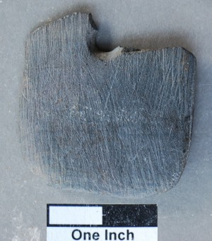
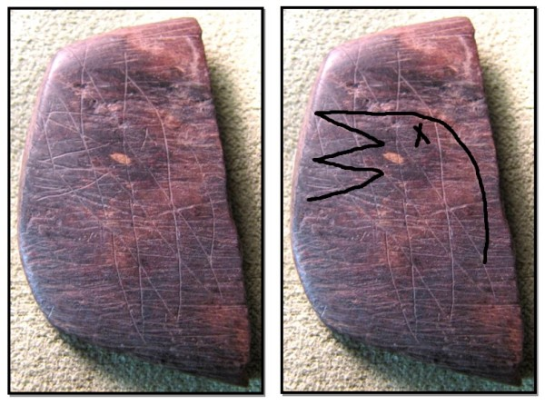

The Pig Point site (18AN50) in Anne Arundel County is one of the most important pre-contact Native American sites ever investigated in Maryland. Archaeologists excavated the site from 2009-2014 under the leadership of Dr. Al Luckenbach and discovered a large base camp on a bluff overlooking the Patuxent River where people lived for at least 10,000 years. The “Lost Towns Project” team of professionals, volunteers, and students found over half a million artifacts and hundreds of features at the site, many of which had ritualistic meaning.
|  |
The archaeologists found three separate activity areas at Pig Point. A feasting area was situated near the edge of the bluff, where people gathered around large fires for thousands of years. Feasts had spiritual significance in many tribal ceremonies. Nearby, stains in the soil marked where structures made of saplings were built in the same place for centuries. Some of these buildings were unheated and might have been used for religious purposes, although they could have also housed people who lived here during warm weather. And near the top of the bluff, archaeologists were amazed to find five large, circular burial pits that contained human remains, copper beads, and deliberately broken stone blades. The “exotic” stone objects were from the Ohio River Valley and the mound-building Adena people, demonstrating a trading network that spanned the Appalachian Mountains over 2,000 years ago. |
Mandy Melton studied the Pig Point gorgets in 2013 and found that many were marked in mysterious ways . Some had scars from repeated bashing with a hard, small object, while others were sanded down to remove the polished finish, Two or three gorget fragments had helix-shaped cuts and one even appeared to have a scratching of a bird under dozens of crisscrossed lines . Bird motifs, like ravens or thunderbirds, are common symbols of Native American mythology. Perhaps most intriguing of all, two fragments with very different marks mended together. This suggests someone broke a gorget in half and then two different people altered their fragment in distinct ways
 (1).jpg)
The exact meaning behind the broken, modified gorgets has been lost to time. But they, along with the feasting and burials, clearly suggest that Pig Point held important ritual significance for Native Americans. Even though the gorgets were discovered nearly 100 feet away from the burial pits, Melon and Luckenbach pointed out that, “North American groups practiced a diversity of symbolic ritual/ceremonial performances that may or may not have included the presence of the physical body of the deceased.” This suggests that Native Americans may have considered the entire Pig Point bluff to possess magical significance unlike anything seen elsewhere in Maryland.

Stephanie Sperling,
M-NCPPC,
Prince George’s Department of Parks and
Recreation